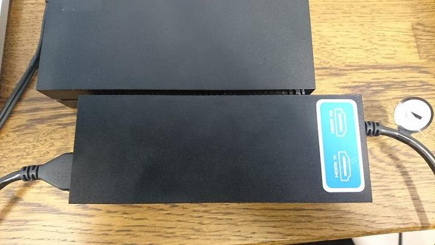
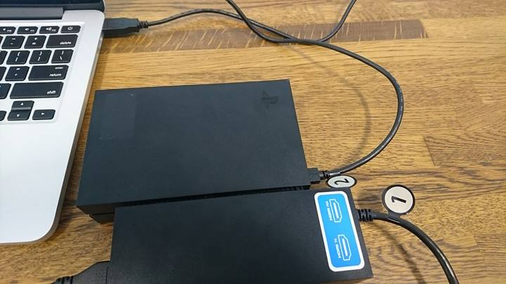

01. Loop HDMI cable from HDMI-PS4 output to front HDMI Input(x □).

02. Connect USB cable to your PC.

03. Connect AC adapter.
04. Connect PSVR HDMI to your PC and other one to unit.
05. Check your Chrome version (or download latest version from here)
06 : MacOSX. Launch Chrome from terminal using below code
(※Make sure that your chrome is under Application directory.)
sudo kextunload -b com.apple.driver.usb.IOUSBHostHIDDevice
/Applications/Google\ Chrome.app/Contents/MacOS/Google\ Chrome --disable-webusb-security --enable-webusb --enable-experimental-web-platform-features
06 : Windows. Launch Chrome from terminal using below command.
06 : Linux. Launch Chrome from terminal using below command.
07. Visit our website, press "Find device" button and choose your playstation VR.
08. It is success if your PSVR`s led turn on and you can see data preview!